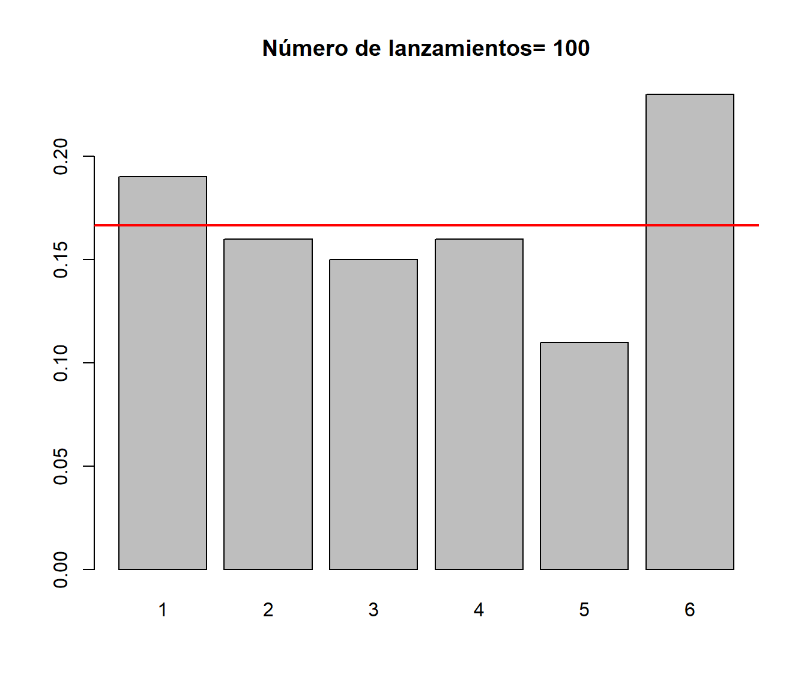
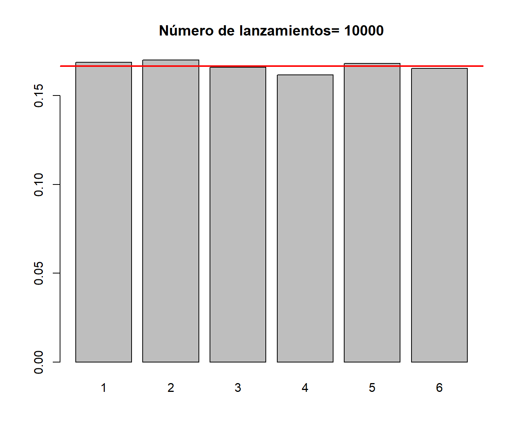

Capítulo 11 Programación
En este capítulo se introducirán los comandos básicos de programación en R…
11.1 Funciones
El lenguaje R permite al usuario
definir sus propias funciones. El esquema de una función es el que
sigue:
nombre <- function(arg1, arg2, ... ) {expresión}En la expresión anterior
arg1, arg2, ...son los argumentos de entrada (también llamados parámetros).La
expresiónestá compuesta de comandos que utilizan los argumentos de entrada para dar la salida deseada.La salida de una función puese ser un número, un vector, una grafica, un mensaje, etc.
11.1.1 Ejemplo: progresión geométrica
Para introducirnos en las funciones, vamos a escribir una función que permita trabajar con las llamadas progresiones geométricas.
Una progresión geométrica es una sucesión de números \(a_1, a_2, a_3\ldots\) tales que cada uno de ellos (salvo el primero) es igual al anterior multiplicado por una constante llamada razón, que representaremos por \(r\). Ejemplos:
\(a_1=1\), \(r=2\):
1, 2, 4, 8, 16,…
\(a_1=-1\), \(r=-2\):
1, -2, 4, -8, 16,…
Según la definición anterior, se verifica que: \[a_2=a_1\cdot r; \quad a_3=a_2\cdot r=a_1\cdot r^2; \quad ...\] y generalizando este proceso se obtiene el llamado término general:
\[a_n=a_1\cdot r^{n-1}\]
También se puede comprobar que la suma de los \(n\) términos de la progresión es:
\[S_n=a_1+\ldots_+a_n=\frac{a_1(r^n-1)}{r-1}\]
La siguiente función, que llamaremos an calcula el término
\(a_n\) de una progresión geométrica pasando como entrada el primer
elemento a1, la razón r y el valor n:
an <- function(a1, r, n) {
a1 * r^(n - 1)
}A continuación algún ejemplo para comprobar su funcionamiento:
an(a1 = 1, r = 2, n = 5)## [1] 16an(a1 = 4, r = -2, n = 6)## [1] -128an(a1 = -50, r = 4, n = 6)## [1] -51200Con la función anterior se pueden obtener, con una sola llamada, varios valores de la progresión:
an(a1 = 1, r = 2, n = 1:5) # a1, ..., a5## [1] 1 2 4 8 16an(a1 = 1, r = 2, n = 10:15) # a10, ..., a15## [1] 512 1024 2048 4096 8192 16384La función Sn calcula la suma de los primeros n
elementos de la progresión:
Sn <- function(a1, r, n) {
a1 * (r^n - 1) / (r - 1)
}
Sn(a1 = 1, r = 2, n = 5)## [1] 31an(a1 = 1, r = 2, n = 1:5) # Valores de la progresión## [1] 1 2 4 8 16Sn(a1 = 1, r = 2, n = 1:5) # Suma de los valores## [1] 1 3 7 15 31# cumsum(an(a1 = 1, r = 2, n = 1:5))11.1.2 Argumentos de entrada
Como ya hemos comentado, los argumentos son los valores de entrada de una función.
Por ejemplo, en la función anterior:
an <- function(a1, r, n) {a1 * r^(n - 1)}los argumentos de entrada son
a1,ryn.
Veamos alguna consideración sobre los argumentos:
No es necesario utilizar el nombre de los argumentos. En este caso es obligatorio mantener el orden de entrada. Por ejemplo, las siguientes llamadas son equivalentes:
an(1, 2, 5)## [1] 16an(a1 = 1, r = 2, n = 5)## [1] 16Si se nombran los argumentos, se pueden pasar en cualquier orden:
an(r = 2, n = 5, a1 = 1)## [1] 16an(n = 5, r = 2, a1 = 1)## [1] 16
11.1.2.1 Argumentos por defecto
En muchas ocasiones resulta muy interesante que las funciones tengan argumentos por defecto.
Por ejemplo, si se quiere que en una función:
nombre <- function(arg1, arg2, arg3, arg4, ...) { expresión }los argumento arg2 y arg3 tomen por defecto los valores a y b
respectivamentebastaría con escribir:
nombre <- function(arg1, arg2 = a, arg3 = b, arg4, ...) { expresión }Para comprender mejor esto considérese el siguiente ejemplo ilustrativo:
xy2 <- function(x = 2, y = 3) { x * y^2 }
xy2()## [1] 18xy2(x = 1, y = 4)## [1] 16xy2(y = 4)## [1] 3211.1.2.2 El argumento ...
El argumento “...” permite
pasar de manera “libre” argumentos adicionales para ser utilizados por otra “subfunción”
dentro de la función principal.
Por ejemplo, en la función:
Density.Plot <- function(datos, ...) { plot(density(datos), ...) }a partir del primer argumento, los argumentos se incluirán en ...
y serán utilizados por la función plot.
data(cars)
Density.Plot(cars$speed)
Density.Plot(cars$speed, col = 'red', xlab = "velocidad", ylab = "distancia")
Los argumentos de entrada de una función se obtienen ejecutando args(funcion):
args(an)## function (a1, r, n)
## NULLargs(xy2)## function (x = 2, y = 3)
## NULLstr(args(Density.Plot))## function (datos, ...)Por otro lado, al escribir el nombre de una función se obtiene su contenido:
an## function(a1, r, n) {
## a1 * r^(n - 1)
## }
## <bytecode: 0x0000000019bc75c8>11.1.3 Salida
El valor que devolverá una función será:
el último objeto evaluado dentro de ella, o
lo indicado dentro de la sentencia
return.
Como las funciones pueden devolver objetos de varios tipos es hatibual que la salida sea una lista.
an <- function(a1, r, n) { a1 * r^(n - 1) }
Sn <- function(a1, r, n) { a1 * (r^n - 1) / (r - 1) }
asn <- function(a1 = 1, r = 2, n = 5) {
A <- an(a1, r, n)
S <- Sn(a1, r, n)
ii <- 1:n
AA <- an(a1, r, ii)
SS <- Sn(a1, r, ii)
return(list(an = A, Sn = S, salida = data.frame(valores = AA, suma = SS)))
}La función asn utiliza las funiones an y Sn
programadas antes y devuelve como salida una lista con las siguientes
componentes:
an: valor de \(a_n\)Sn: valor de \(S_n\)salida: data.frame con dos variablessalida: vector con las \(n\) primeras componentes de la progresiónsuma: suma de las \(n\) primeras componentes
asn()## $an
## [1] 16
##
## $Sn
## [1] 31
##
## $salida
## valores suma
## 1 1 1
## 2 2 3
## 3 4 7
## 4 8 15
## 5 16 31La salida de la función anterior es una lista y se puede acceder a los elementos de la misma:
res <- asn()
res$an## [1] 16res$Sn## [1] 31res$salida## valores suma
## 1 1 1
## 2 2 3
## 3 4 7
## 4 8 15
## 5 16 3111.1.4 Otros ejemplos
11.1.4.1 Ejemplo: letra del DNI
A continuación se calculará la letra del DNI a partir de su correspondiente número. El método utilizado para obtener la letra del DNI consiste en dividir el número entre 23 y según el resto obtenido adjudicar la letra que figura en la siguiente tabla:
| resto | letra | resto | letra | resto | letra | ||
|---|---|---|---|---|---|---|---|
| 0 | T | 8 | P | 16 | Q | ||
| 1 | R | 9 | D | 17 | V | ||
| 2 | W | 10 | X | 18 | H | ||
| 3 | A | 11 | B | 19 | L | ||
| 4 | G | 12 | N | 20 | C | ||
| 5 | M | 13 | J | 21 | K | ||
| 6 | Y | 14 | Z | 22 | E | ||
| 7 | F | 15 | S |
La siguiente función permite obtener la letra del DNI:
DNI <- function(numero) {
letras <- c("T", "R", "W", "A", "G", "M", "Y", "F",
"P", "D", "X", "B", "N", "J", "Z", "S",
"Q", "V", "H", "L", "C", "K", "E")
return(letras[numero %% 23 + 1])
}
DNI(50247828)## [1] "G"11.1.4.2 Ejemplo: simulación del lanzamiento de un dado
La siguiente función simula \(n\) (por defecto \(n=100\)) lanzamientos de un dado. La función devuelve la tabla de frecuencias y realiza el correspondiente gráfico:
dado <- function(n = 100) {
lanzamientos <- sample(1:6, n, rep = TRUE)
frecuencias <- table(lanzamientos) / n
barplot(frecuencias, main = paste("Número de lanzamientos=", n))
abline(h = 1 / 6, col = 'red', lwd = 2)
return(frecuencias)
}A continuación se muestran los resultados obtenidos para varias simulaciones:
dado(100)
## lanzamientos
## 1 2 3 4 5 6
## 0.14 0.24 0.16 0.13 0.16 0.17dado(500)
## lanzamientos
## 1 2 3 4 5 6
## 0.184 0.158 0.152 0.176 0.172 0.158dado(10000)
## lanzamientos
## 1 2 3 4 5 6
## 0.1600 0.1731 0.1728 0.1666 0.1667 0.1608Se puede comprobar que al aumentar el valor de \(n\) las frecuencias se aproximan al valor teórico \(1/6=0.1667\).
11.1.5 Variables locales y globales
En R no es
necesario declarar las variables usadas dentro de una función. Se
utiliza la regla llamada “ámbito lexicográfico” para decidir si un
objeto es local a una función o global.
Para entender mejor esto se consideran los siguientes ejemplos:
fun <- function() print(x)
x <- 1
fun()## [1] 1La variable x no está definida dentro de fun, así que R busca
x en el entorno en el que se llamó a la función e imprimirá su valor.
Si x es utilizado como el nombre de un objeto dentro de la
función, el valor de x en el ambiente global (fuera de la función) no
cambia.
x <- 1
fun2 <- function() {
x <- 2
print(x)
}
fun2()## [1] 2x## [1] 1Para que el valor “global” de una variable pueda ser cambidado dentro de
una función se utiliza la doble asignación <<-.
x <- 1
y <- 3
fun2 <- function() {
x <- 2
y <<- 5
print(x)
print(y)
}
fun2()## [1] 2
## [1] 5x # No cambió su valor## [1] 1y # Cambió su valor## [1] 511.2 Ejecución condicional
Para hacer ejecuciones
condicionales de código se usa el comando if con sintaxis:
if (condicion1) {expresión1} else {expresión2}La siguiente función comprueba si un número es múltiplo de dos:
multiplo2 = function(x) {
if (x %% 2 == 0) {
print(paste(x,'es múltiplo de dos'))
} else {
print(paste(x,'no es múltiplo de dos'))
}
}
multiplo2(5)## [1] "5 no es múltiplo de dos"multiplo2(-2.3)## [1] "-2.3 no es múltiplo de dos"multiplo2(10)## [1] "10 es múltiplo de dos"11.3 Bucles y vectorización
11.3.1 Bucles
R permite crear bucles repetitivos
(loops) y la ejecución condicional de sentencias. R admite bucles
for, repeat and while.
11.3.1.1 El bucle for
La sintaxis de un bucle for es la que sigue:
for (i in lista_de_valores) { expresión }Por ejemplo, dado un vector \(x\) se puede calcular \(y=x^2\) con el código:
x <- seq(-2, 2, 0.5)
n <- length(x)
y <- numeric(n) # Es necesario crear el objeto para acceder a los componentes...
for (i in 1:n) { y[i] <- x[i] ^ 2 }
x## [1] -2.0 -1.5 -1.0 -0.5 0.0 0.5 1.0 1.5 2.0y## [1] 4.00 2.25 1.00 0.25 0.00 0.25 1.00 2.25 4.00x^2## [1] 4.00 2.25 1.00 0.25 0.00 0.25 1.00 2.25 4.00Otro ejemplo:
for(i in 1:5) print(i)## [1] 1
## [1] 2
## [1] 3
## [1] 4
## [1] 5El siguiente código simula gráficamente el segundero de un reloj:
angulo <- seq(0, 360, by = 6)
radianes <- angulo * pi / 180
x <- sin(radianes)
y <- cos(radianes)
sec <- seq(6, 61, by = 5)
for (i in 1:61) {
plot(x, y, axes = FALSE, xlab = "", ylab = "", type = 'l', col = 'grey')
points(x[i], y[i])
# Añadir "decoración"
text(x[sec]*0.9, y[sec]*0.9, labels = sec - 1)
arrows(0, 0, x[i]*0.85, y[i]*0.85, col = 'blue')
# Esperar un segundo
Sys.sleep(1)
}11.3.1.2 El bucle while
La sintaxis del bucle while
es la que sigue:
while (condición lógica) { expresión }Por ejemplo, si queremos calcular el primer número entero positivo cuyo cuadrado no excede de 5000, podemos hacer:
cuadrado <- 0
n <- 0
while (cuadrado <= 5000) {
n <- n + 1
cuadrado <- n^2
}
cuadrado## [1] 5041n## [1] 71n^2## [1] 5041Nota: Dentro de un bucle se puede emplear el comando break para terminarlo y el comando next para saltar a la siguiente iteración.
11.3.2 Vectorización
Como hemos visto en R se pueden
hacer bucles. Sin embargo, es preferible evitar este tipo de estructuras
y tratar de utilizar operaciones vectorizadas que son mucho más
eficientes desde el punto de vista computacional.
Por ejemplo para sumar dos vectores se puede hacer con un for:
x <- c(1, 2, 3, 4)
y <- c(0, 0, 5, 1)
n <- length(x)
z <- numeric(n)
for (i in 1:n) {
z[i] <- x[i] + y[i]
}
z## [1] 1 2 8 5Sin embargo, la operación anterior se podría hacer de modo más eficiente en modo vectorial:
z <- x + y
z## [1] 1 2 8 511.3.3 Funciones apply
11.3.3.1 La función apply
Una forma de evitar la
utilización de bucles es utilizando la función apply() que permite
evaluar una misma función en todas las filas, columnas, …. de un array
de forma simultánea.
La sintaxis de esta función es:
apply(X, MARGIN, FUN, ...)X: matriz (o array)MARGIN: Un vector indicando las dimensiones donde se aplicará la función. 1 indica filas, 2 indica columnas, yc(1,2)indica filas y columnas.FUN: función que será aplicada....: argumentos opcionales que serán usados porFUN.
Veamos la utilización de la función apply con un ejemplo:
x <- matrix(1:9, nrow = 3)
x## [,1] [,2] [,3]
## [1,] 1 4 7
## [2,] 2 5 8
## [3,] 3 6 9apply(x, 1, sum) # Suma por filas## [1] 12 15 18apply(x, 2, sum) # Suma por columnas## [1] 6 15 24apply(x, 2, min) # Mínimo de las columnas## [1] 1 4 7apply(x, 2, range) # Rango (mínimo y máximo) de las columnas## [,1] [,2] [,3]
## [1,] 1 4 7
## [2,] 3 6 911.3.3.2 La función tapply
La function tapply es
similar a la función apply y permite aplicar una función a los datos desagregados,
utilizando como criterio los distintos niveles de una variable factor.
La sintaxis de esta función es como sigue:
tapply(X, INDEX, FUN, ...,)X: matriz (o array).INDEX: factor indicando los grupos (niveles).FUN: función que será aplicada....: argumentos opcionales .
Consideremos, por ejemplo, el data.frame ChickWeight con datos de un
experimento relacionado con la repercusión de varias dietas en el peso
de pollos.
data(ChickWeight)
head(ChickWeight)## weight Time Chick Diet
## 1 42 0 1 1
## 2 51 2 1 1
## 3 59 4 1 1
## 4 64 6 1 1
## 5 76 8 1 1
## 6 93 10 1 1peso <- ChickWeight$weight
dieta <- ChickWeight$Diet
levels(dieta) <- c("Dieta 1", "Dieta 2", "Dieta 3", "Dieta 4")
tapply(peso, dieta, mean) # Peso medio por dieta## Dieta 1 Dieta 2 Dieta 3 Dieta 4
## 102.6455 122.6167 142.9500 135.2627tapply(peso, dieta, summary)## $`Dieta 1`
## Min. 1st Qu. Median Mean 3rd Qu. Max.
## 35.00 57.75 88.00 102.65 136.50 305.00
##
## $`Dieta 2`
## Min. 1st Qu. Median Mean 3rd Qu. Max.
## 39.0 65.5 104.5 122.6 163.0 331.0
##
## $`Dieta 3`
## Min. 1st Qu. Median Mean 3rd Qu. Max.
## 39.0 67.5 125.5 142.9 198.8 373.0
##
## $`Dieta 4`
## Min. 1st Qu. Median Mean 3rd Qu. Max.
## 39.00 71.25 129.50 135.26 184.75 322.00Otro ejemplo:
provincia <- as.factor(c(1, 3, 4, 2, 4, 3, 2, 1, 4, 3, 2))
levels(provincia) = c("A Coruña", "Lugo", "Orense", "Pontevedra")
hijos <- c(1, 2, 0, 3, 4, 1, 0, 0, 2, 3, 1)
data.frame(provincia, hijos)## provincia hijos
## 1 A Coruña 1
## 2 Orense 2
## 3 Pontevedra 0
## 4 Lugo 3
## 5 Pontevedra 4
## 6 Orense 1
## 7 Lugo 0
## 8 A Coruña 0
## 9 Pontevedra 2
## 10 Orense 3
## 11 Lugo 1tapply(hijos, provincia, mean) # Número medio de hijos por provincia## A Coruña Lugo Orense Pontevedra
## 0.500000 1.333333 2.000000 2.00000011.4 Aplicación: validación cruzada
Si deseamos evaluar la calidad predictiva de un modelo, lo ideal es disponer de suficientes datos para poder hacer dos grupos con ellos: una muestra de entrenamiento y otra de validación. Cuando hacer esto no es posible, disponemos como alternativa de la validación cruzada, una herramienta que permite estimar los errores de predicción utilizando una única muestra de datos. En su versión más simple (llamada en inglés leave-one-out):
se utilizan todos los datos menos uno para realizar el ajuste, y se mide su error de predicción en el único dato no utilizado;
a continuación se repite el proceso utilizando, uno a uno, todos los puntos de la muestra de datos;
y finalmente se combinan todos los errores en un único error de predicción.
El proceso anterior se puede generalizar repartiendo los datos en distintos grupos, más o menos del mismo tamaño, y sustituyendo en la explicación anterior dato por grupo.
11.4.1 Primer ejemplo
Cuando disponemos de unos datos y los queremos ajustar utilizando un modelo que depende de un parámetro, por ejemplo un modelo de regresión polinómico que depende del grado del polinomio, podemos utilizar la validación cruzada para seleccionar el grado del polinomio que debemos utilizar.
Veámoslo utilizando las variables income y prestige de la base de datos Prestige, incluida en el paquete car.
library(car)
plot(prestige ~ income, data = Prestige, col = 'darkgray')
Representemos, gráficamente, los ajustes lineal, cuadrático y cúbico.
plot(prestige ~ income, data = Prestige, col = 'darkgray')
# Ajuste lineal
abline(lm(prestige ~ income, data = Prestige))
# Ajuste cuadrático
modelo <- lm(prestige ~ income + I(income^2), data = Prestige)
parest <- coef(modelo)
curve(parest[1] + parest[2]*x + parest[3]*x^2, lty = 2, add = TRUE)
# Ajuste cúbico
modelo <- lm(prestige ~ poly(income, 3), data = Prestige)
valores <- seq(0, 26000, len = 100)
pred <- predict(modelo, newdata = data.frame(income = valores))
lines(valores, pred, lty = 3)
legend("bottomright", c("Lineal","Cuadrático","Cúbico"), lty = 1:3)
Vamos a escribir una función que nos devuelva, para cada dato (fila) de Prestige, la predicción en ese punto ajustando el modelo con todos los demás puntos.
cv.lm <- function(formula, datos) {
n <- nrow(datos)
cv.pred <- numeric(n)
for (i in 1:n) {
modelo <- lm(formula, datos[-i, ])
cv.pred[i] <- predict(modelo, newdata = datos[i, ])
}
return(cv.pred)
}Por último, calculamos el error de predicción (en este caso el error cuadrático medio) en los datos de validación. Repetimos el proceso para cada valor del parámetro (grado del ajuste polinómico) y minimizamos.
grado <- 1:5
cv.error <- numeric(5)
for(p in grado){
cv.pred <- cv.lm(prestige ~ poly(income, p), Prestige)
cv.error[p] <- mean((cv.pred - Prestige$prestige)^2)
}
plot(grado, cv.error, pch=16)
grado[which.min(cv.error)]## [1] 211.4.2 Segundo ejemplo
En este segundo ejemplo vamos a aplicar una técnica de modelado local al problema de regresión del ejemplo anterior. El enfoque es data-analytic en el sentido de que no nos limitamos a una familia de funciones que dependen de unos parámetros (enfoque paramétrico), que son los que tenemos que determinar, sino que las funciones de regresión están determinadas por los datos. Aun así, sigue habiendo un parámetro que controla el proceso, cuyo valor debemos fijar siguiendo algún criterio de optimalidad.
Vamos a realizar, utilizando la función loess, un ajuste polinómico local
robusto, que depende del parámetro span, que podemos interpretar como la
proporción de datos empleada en el ajuste.
Utilizando un valor span=0.25:
plot(prestige ~ income, Prestige, col = 'darkgray')
fit <- loess(prestige ~ income, Prestige, span = 0.25)
valores <- seq(0, 25000, 100)
pred <- predict(fit, newdata = data.frame(income = valores))
lines(valores, pred)
Si utilizamos span=0.5:
plot(prestige ~ income, Prestige, col = 'darkgray')
fit <- loess(prestige ~ income, Prestige, span = 0.5)
valores <- seq(0, 25000, 100)
pred <- predict(fit, newdata = data.frame(income = valores))
lines(valores, pred)
Nuestro objetivo es seleccionar un valor razonable para span, y lo vamos a
hacer utilizando validación cruzada y minimizando el error cuadrático medio
de la predicción en los datos de validación.
Utilizando la función
cv.loess <- function(formula, datos, p) {
n <- nrow(datos)
cv.pred <- numeric(n)
for (i in 1:n) {
modelo <- loess(formula, datos[-i, ], span = p,
control = loess.control(surface = "direct"))
# control = loess.control(surface = "direct") permite extrapolaciones
cv.pred[i] <- predict(modelo, newdata = datos[i, ])
}
return(cv.pred)
}y procediendo de modo similar al caso anterior:
ventanas <- seq(0.2, 1, len = 10)
np <- length(ventanas)
cv.error <- numeric(np)
for(p in 1:np){
cv.pred <- cv.loess(prestige ~ income, Prestige, ventanas[p])
cv.error[p] <- mean((cv.pred - Prestige$prestige)^2)
# cv.error[p] <- median(abs(cv.pred - Prestige$prestige))
}
plot(ventanas, cv.error)
obtenemos la ventana “óptima” (en este caso el valor máximo):
span <- ventanas[which.min(cv.error)]
span## [1] 1y la correspondiente estimación:
plot(prestige ~ income, Prestige, col = 'darkgray')
fit <- loess(prestige ~ income, Prestige, span = span)
valores <- seq(0, 25000, 100)
pred <- predict(fit, newdata = data.frame(income = valores))
lines(valores, pred)